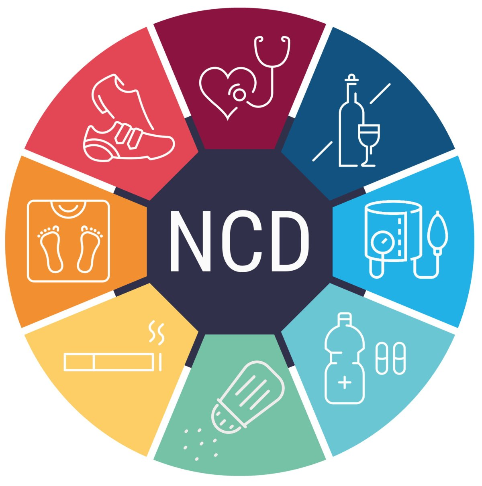

Earth Observation Health Analytics Platform
A first-of-its-kind platform using real-time Earth observation and health data to deliver actionable insights on Malaria and NCDs across Africa.
A first-of-its-kind platform using real-time Earth observation and health data to deliver actionable insights on Malaria and NCDs across Africa.
Platform Modules
Live heatmap, ward-level risk scores, and environmental factor tracking.
Explore →Africa-wide NCD risk mapping integrating air quality, population density, and lifestyle data.
Explore →90-day risk forecasts using a Random Forest model trained on 13 months of EO data.
Explore →Sortable ward-level risk tables with CSV export for health teams and policy makers.
Explore →By combining land surface temperature, soil moisture, and NDWI water index from Sentinel-2 and MODIS satellites, EOHA models mosquito vector suitability down to individual ward boundaries across Limpopo.
Open Dashboard →

EOHA integrates geospatial demographics, urban sprawl indicators, NO₂ and PM2.5 air quality data, and population density to forecast NCD risk across African countries and provinces.
Open Dashboard →The Pipeline
Three steps between raw EO data and actionable public health decisions.
Sentinel-2 and MODIS satellites capture LST, soil moisture, NDWI, and vegetation index at ward level.
A Random Forest model scores each ward against malaria vector suitability and NCD risk thresholds with 91% accuracy.
Health teams receive ward-level risk maps, 90-day forecasts, and exportable reports to guide resource allocation.
Earth Observation
Our machine surveillance platform draws from Sentinel-2, MODIS, and SANSA satellite archives to deliver real-time environmental intelligence.


Leveraging local geospatial demographics and ward-level administrative boundaries, EOHA enables real-time disease surveillance and evidence-based policy formulation across the continent.

Supported by